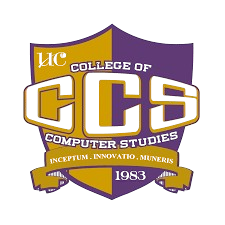
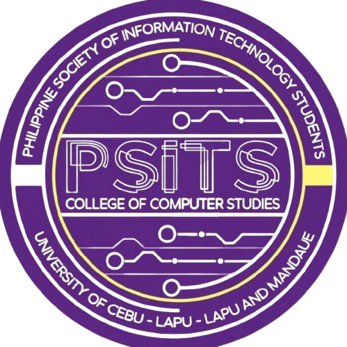

Student Council Elections
S.Y. 2025–2026
BEATS
Student Organization Partylist
S.Y. 2026-2027
BUILD, EMPOWER, AND TRANSFORM THE SYSTEM
SCROLL


Student Council Elections
S.Y. 2025–2026
Student Organization Partylist
S.Y. 2026-2027
BUILD, EMPOWER, AND TRANSFORM THE SYSTEM
Meet the Officers
What We Stand For
THE FRIDAY BREAKPOINT and COMMIT-AND-CHILL
EFFECTIVE COMMUNICATION TOWARDS STUDENTS
AN EXPRESSIVE ENVIRONMENT
B.E.A.T.S.
CCS Event Requirements Tracker Program and STUDENT BANK PROGRAM
CCS Student Online Banking Payment Program
The Voice of the Students
STRENGTHENING EFFECTIVE COMMUNICATION BETWEEN MEDIA AND STUDENTS IN UCLM
Distinguished Talents, Open Mic: Speak-up Student, and Timely Updates
Student Engagement Across Competitions
Student Connection, Recognition, and Volunteer Programs
THE 3C's: COMMUNICATION, CURIOSITY, and CONNECTION